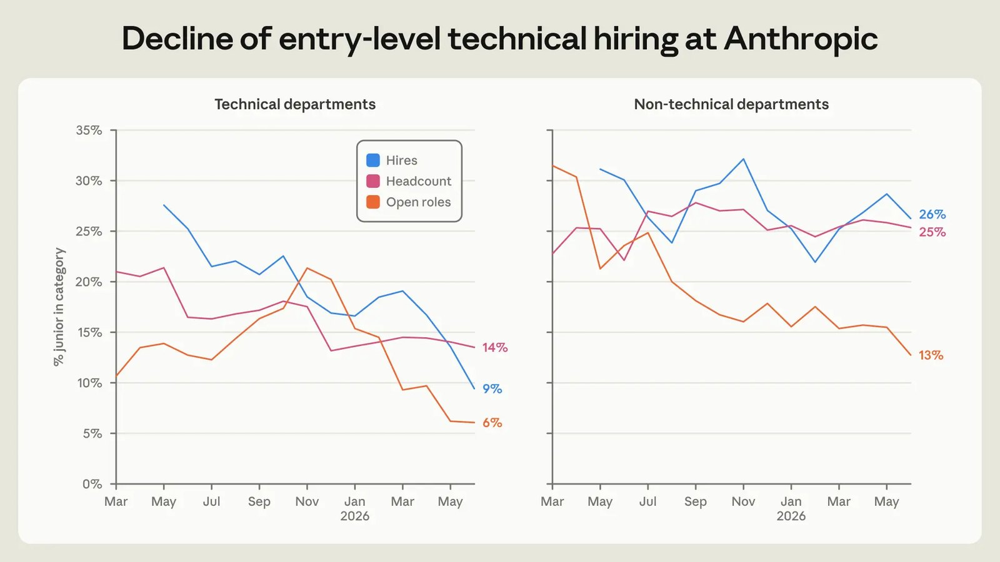

头条 一
OpenCode 称遭“蒸馏攻击”，1.4% Console 用户受影响
OpenCode 17 日在 X 上称，前一晚发生与“大规模蒸馏攻击”有关的安全事件，影响 1.4% 的 Console 用户，已邮件通知。据报道，受影响的是绑定了外部模型服务的用户，OpenAI、Anthropic、Google 的密钥可能外泄，有人称账单已涨。
官方没说攻击怎么进来、泄了什么，入口说法来自转述，待官方复盘。凡把密钥存在第三方控制台的人，现在都该换一遍。
来源：OpenCode（X）
OpenCode 密钥事件、DeepSeek V4.1 Flash 更新、Anthropic 用工报告
OpenCode 称遭遇大规模攻击，据报道用户绑定的模型密钥可能外泄；DeepSeek 发布更快更省的 V4.1 Flash 更新；Anthropic 自己说，Claude 干得越多，人的注意力越成瓶颈。
OpenCode 17 日在 X 上称，前一晚发生与“大规模蒸馏攻击”有关的安全事件，影响 1.4% 的 Console 用户，已邮件通知。据报道，受影响的是绑定了外部模型服务的用户，OpenAI、Anthropic、Google 的密钥可能外泄，有人称账单已涨。
官方没说攻击怎么进来、泄了什么，入口说法来自转述，待官方复盘。凡把密钥存在第三方控制台的人，现在都该换一遍。
DeepSeek 在 Hugging Face 放出 V4.1 Flash-1017，称是 V4.1 Flash 的小更新。官方自报：Terminal-Bench 4.0 从 31.2 升到 42.3，DeepSWE 从 74.2 升到 77.0，输出更短、执行更快。MIT 许可，上下文 1M。
数字是 DeepSeek 自己报的，没有第三方复测；在它列出的榜里，Opus 5 仍在多项领先。看点是“省时省钱”这条线。

Anthropic 16 日发布用工报告：技术部门初级员工占比从 21% 降到 14%，初级技术岗招聘占比从 27% 降到 9%；人均会议时间同比增 20%。报告称员工在做的事情正从“做活”转向“管理 Claude”，“人的注意力”成了瓶颈。
这是公司对自家数据的自述；它也写了“更多代码不等于更好”。对想招初级工程师的人，这是一个冷数据。
Verge 称条款曾引发训练 AI 的担忧。
门禁话题连日未退，值得继续盯。
方便与权限，又是同一道题。
记忆可审计，是“能管住”的前提。
OpenCode 官方帖，2.7M 浏览。
“第一”出自量子位报道，待独立复测。
新团队的新路线，先看它的演示。
今日 HF 论文榜首，105 赞。
Claude Code 官方插件目录。
长文讲机制，HN 489 分。
买卡前先看速度，省钱的小工具。
点对点网络库，工程师社区在看。
密钥放在别人的控制台里，方便是真的，风险也是真的。
DeepSeek 的数字是自报的，等第三方复测再下结论。
Anthropic 自己都说注意力是瓶颈，那别的公司更该先算算会议账。